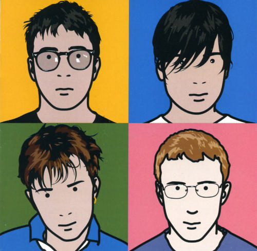

<!DOCTYPE html>
<html>
<head>
<title>Zigging It Up</title>
<script src="js/zig.min.js"></script>
<script src="js/jquery-2.1.0.min.js"></script>
<script src="js/actions.js"></script>
<script src="js/jquery-ui-1.10.4.custom.min.js"></script>
<link rel="stylesheet" href="css/styles.css">
  <link rel="stylesheet" href="http://code.jquery.com/ui/1.10.4/themes/smoothness/jquery-ui.css">

<script>
  $(function() {
    $("#slider" ).slider({
    	max: 100,
    	value: 0,
    	slide: function(event, ui) {
    		$("#x").text(ui.value); //show us the slider value 
    		var amt = "-webkit-filter:blur("+ui.value+"px)"
    		$("#blur img").attr("style", amt);
    	}
    });
  });
  </script>

</head>
<body>
	<article id="radar">
		
	</article>
	<!-- <div id="slider"></div>
	<div id="x">0</div>
	<div id="blur">
		
	</div>
  -->
</body>
</html>